夏の模様替え前に整えたい 小型家具・収納ケース・ラグの一時保管
夏の模様替え前に置き場に迷いやすい小型家具、収納ケース、折りたたみチェア、ラグの一時保管を整えるコツを紹介。トランクルーム収納番長なら、堺市西区の屋内型収納で...
続きを読む →
七夕飾り、短冊、笹飾り、夏の行事小物を来年も気持ちよく使うための保管方法を紹介。トランクルーム収納番長なら、堺市西区の屋内型収納で...
続きを読む →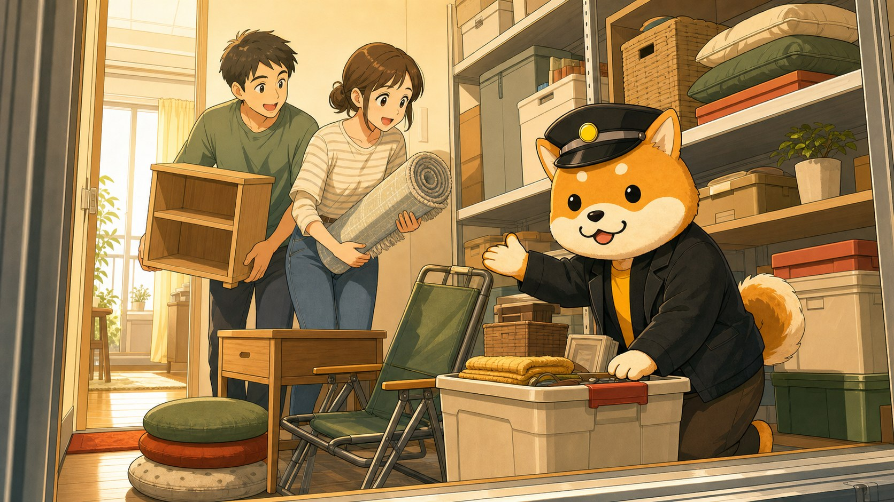
夏の模様替え前に置き場に迷いやすい小型家具、収納ケース、折りたたみチェア、ラグの一時保管を整えるコツを紹介。トランクルーム収納番長なら、堺市西区の屋内型収納で...
続きを読む →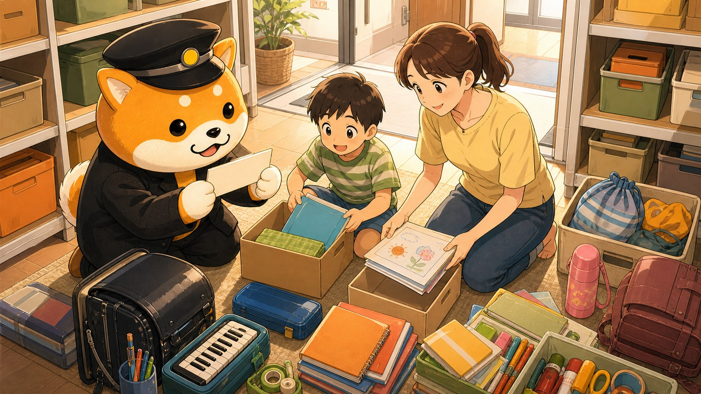
夏休み前に家へ戻ってきやすい学用品、作品、習い事バッグ、ランドセルまわりの置き場を整えるコツを紹介。トランクルーム収納番長なら、堺市西区の屋内型収納で...
続きを読む →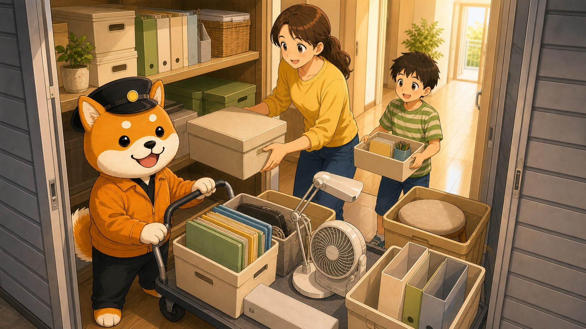
夏の在宅ワーク前に増えがちな書類、デスク用品、小型家電、予備の仕事道具の置き場を整えるコツを紹介。トランクルーム収納番長なら、堺市西区の屋内型収納で...
続きを読む →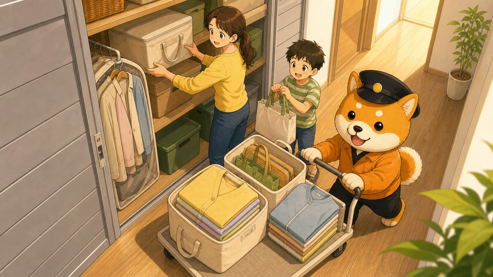
夏の衣替え後に残りがちな春服、薄手上着、通勤バッグ、布製バッグ類の置き場を整えるコツを紹介。トランクルーム収納番長なら、堺市西区の屋内型収納で...
続きを読む →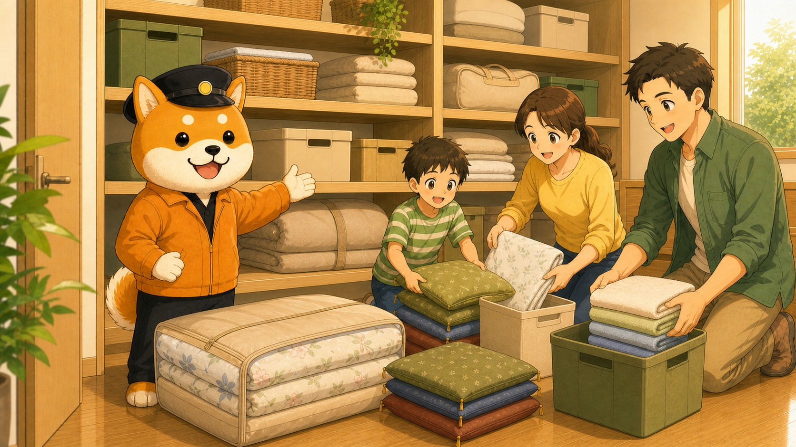
夏の帰省や来客前に増えがちな来客用布団、座布団、タオル類、寝具カバーの置き場を整えるコツを紹介。トランクルーム収納番長なら、堺市西区の屋内型収納で...
続きを読む →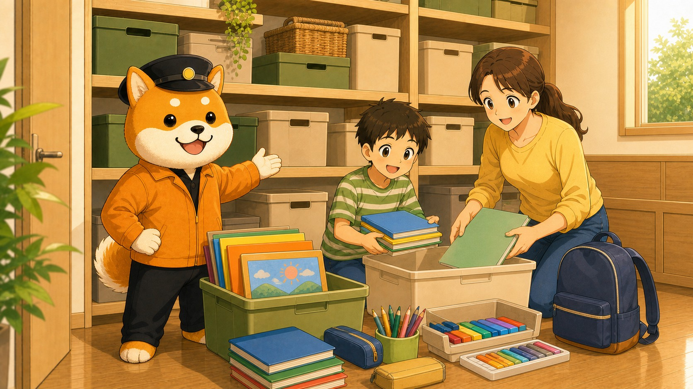
夏休み前に増えがちな学用品、工作材料、自由研究用品、プリント類の置き場を整えるコツを紹介。トランクルーム収納番長なら、堺市西区の屋内型収納で...
続きを読む →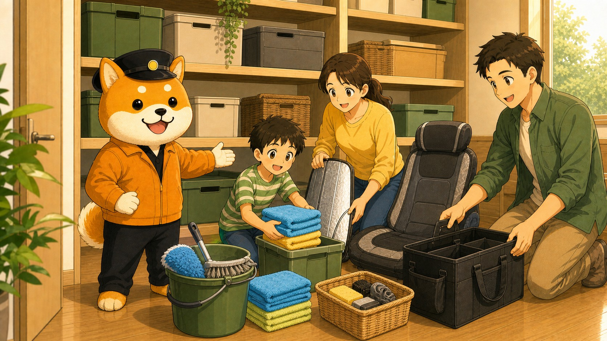
夏のドライブ前に増えがちな洗車用品、カー用品、車内小物、トランク整理用品の置き場を整えるコツを紹介。トランクルーム収納番長なら、堺市西区の屋内型収納で...
続きを読む →
夏本番前に増えがちな扇風機、サーキュレーター、除湿機、コード類の置き場を整えるコツを紹介。トランクルーム収納番長なら、堺市西区の屋内型収納で...
続きを読む →
夏の大掃除や模様替え前に増えがちな掃除道具、脚立、工具箱の置き場を整えるコツを紹介。トランクルーム収納番長なら、堺市西区の屋内型収納で...
続きを読む →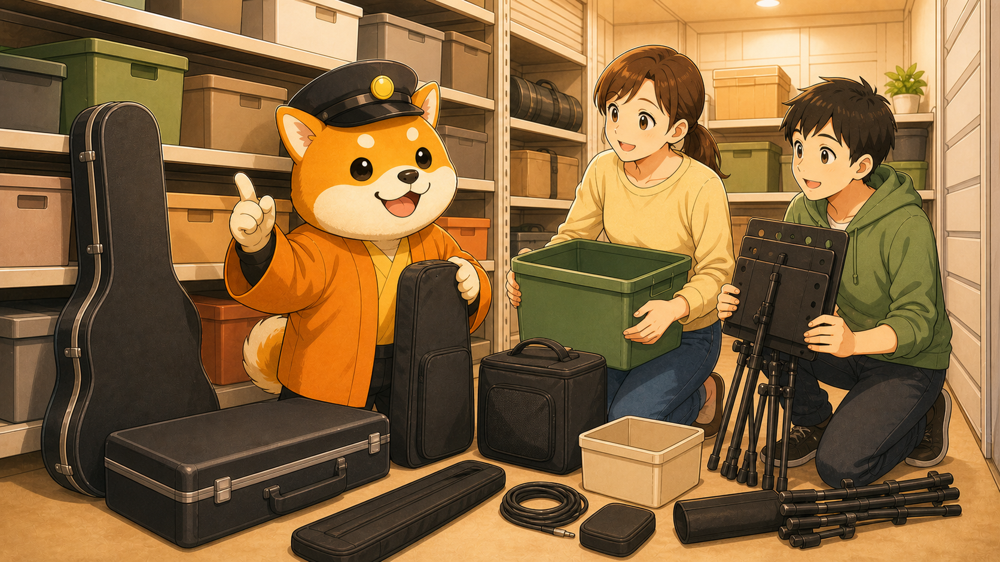
夏の発表会や部活、教室イベント前に増えやすい楽器ケース、譜面台、音響小物、予備備品の置き場を整えるコツを紹介。トランクルーム収納番長...
続きを読む →夏のゴルフやスポーツ前に増えやすいゴルフバッグ、シューズ、スポーツバッグ、季節用品の置き場を整えるコツを紹介。トランクルーム収納番長なら、堺市西区の屋内型で清潔・安心・24時間利用可能な保管先を自然に検討できます。
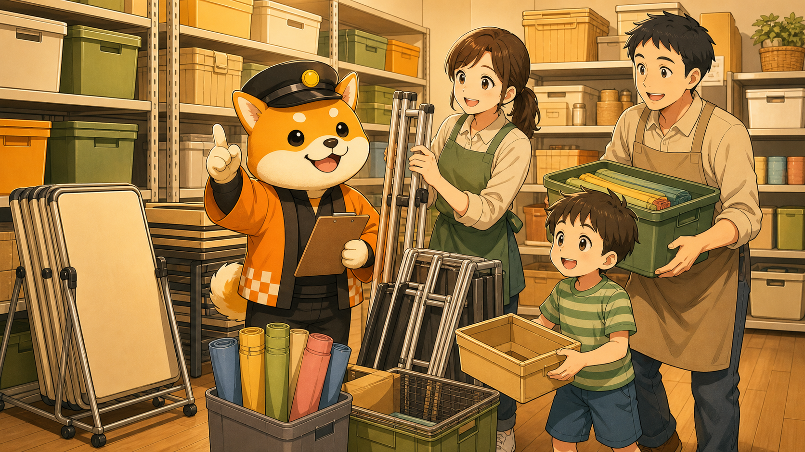
夏の地域イベントや教室、店舗の出店前に増えやすい折りたたみ什器、POP類、季節備品の置き場を整えるコツを紹介。トランクルーム収納番長なら、堺市西区の屋内型で清潔・安心・24時間利用可能な保管先を自然に検討できます。
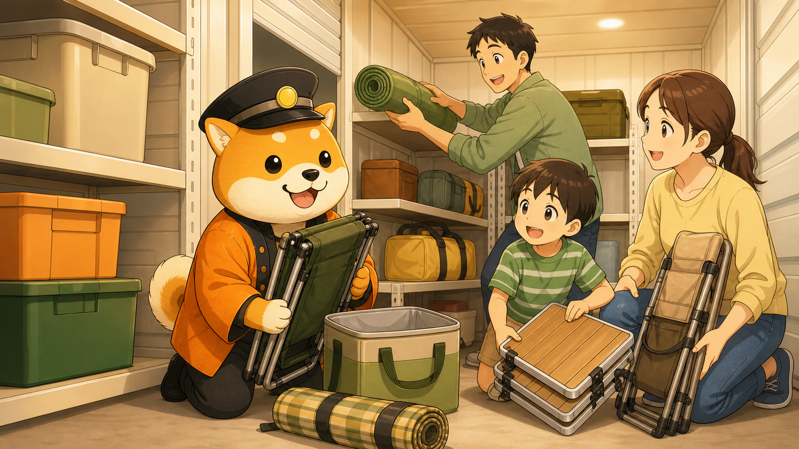
夏のBBQや外遊び前に増えやすいアウトドアチェア、折りたたみテーブル、タープ、クーラーバッグの置き場を整えるコツを紹介。トランクルーム収納番長なら、堺市西区の屋内型で清潔・安心・24時間利用可能な保管先を自然に検討できます。
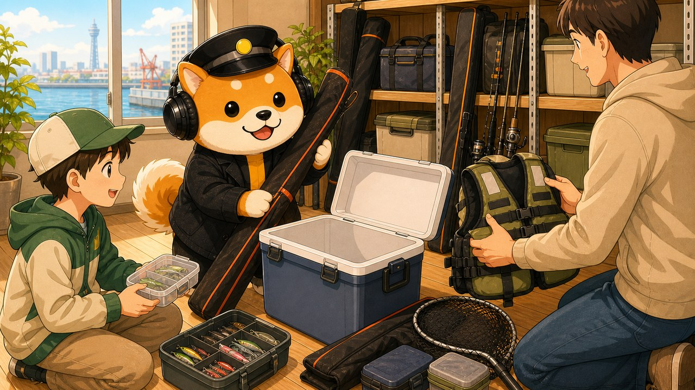
夏の釣り前に増えやすい釣り竿、クーラーボックス、ライフジャケット、タックルボックスの置き場を整えるコツを紹介。トランクルーム収納番長なら、堺市西区の屋内型で清潔・安心・24時間利用可能な保管先を自然に検討できます。
梅雨明け前に増えやすいベランダ用品、日よけ、プランター、ガーデニング道具の置き場を整えるコツを紹介。トランクルーム収納番長なら、堺市西区の屋内型で清潔・安心・24時間利用可能な保管先を自然に検討できます。
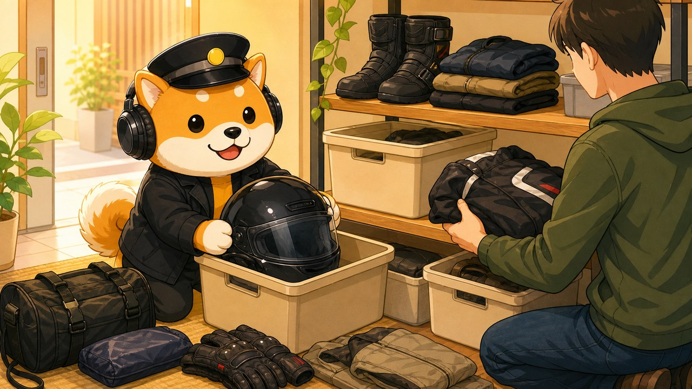
夏前に見直したいバイク用品、ヘルメット、冬用ジャケット、ツーリングバッグの置き場を整えるコツを紹介。トランクルーム収納番長なら、堺市西区の屋内型で清潔・安心・24時間利用可能な保管先を自然に検討できます。
夏前にしまいたい冬用ラグ、カーペット、こたつ布団の置き場を整えるコツを紹介。トランクルーム収納番長なら、堺市西区の屋内型で清潔・安心・24時間利用可能な保管先を自然に検討できます。

夏祭り前に増えやすい浴衣、甚平、下駄、うちわ、巾着など祭り用品の置き場を整えるコツを紹介。トランクルーム収納番長なら、堺市西区の屋内型で清潔・安心・24時間利用可能な保管先を自然に検討できます。
夏の旅行や帰省前に増えやすいスーツケース、旅行バッグ、帰省用品の置き場を整えるコツを紹介。トランクルーム収納番長なら、堺市西区の屋内型で清潔・安心・24時間利用可能な保管先を自然に検討できます。

夏休み前に増えるプールバッグ、浮き輪、タオル、水遊び用品の置き場を整えるコツを紹介。トランクルーム収納番長なら、堺市西区の屋内型で清潔・安心・24時間利用可能な保管先を自然に検討できます。
帰省やお中元の時期に増えやすい紙袋、手土産、箱物の置き場を整えるコツを紹介。トランクルーム収納番長なら、堺市西区の屋内型で清潔・安心・24時間利用可能な保管先を自然に検討できます。
梅雨時期に増える傘・レインコート・長靴で玄関が狭く感じる方向けに、家に残す物と一時保管する物を分ける考え方を紹介。トランクルーム収納番長なら、堺市西区の屋内型で清潔・安心・24時間利用可能な保管先を自然に検討できます。
親族の集まりや帰省前に、和室とリビングの動線を整える一時保管の考え方を紹介。トランクルーム収納番長なら、堺市西区の屋内型で清潔・安心・24時間利用可能な保管先を自然に検討できます。
受験後の参考書、ノート、作品、学用品の置き場に迷うご家庭へ、家に残す物と一時保管する物を分ける考え方を紹介。トランクルーム収納番長なら、堺市西区の屋内型で清潔・安心・24時間利用可能な保管先を自然に検討できます。
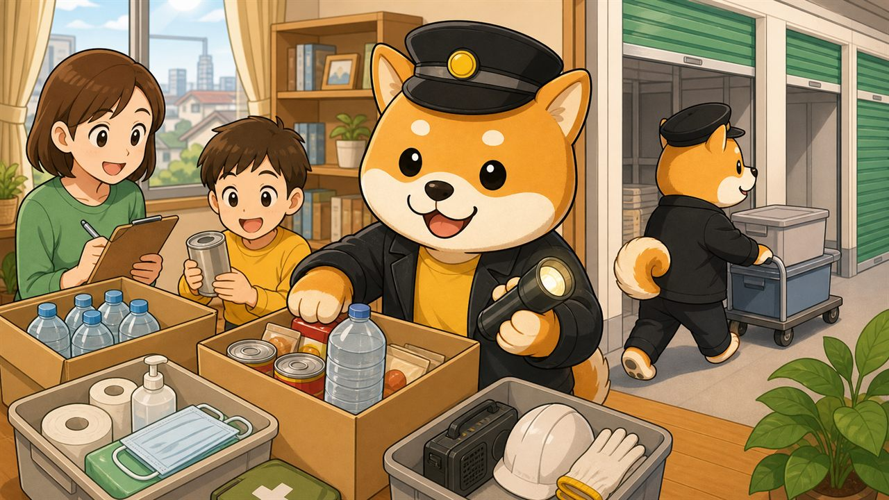
防災用品や備蓄の置き場に悩む方向けに、家に残す物と外部保管する物を分ける考え方を紹介。トランクルーム収納番長なら、堺市西区の屋内型で清潔・安心・24時間利用可能な保管先を自然に検討できます。
梅雨時期のキャンプ用品やアウトドア用品を、家に広げすぎず傷めにくく保管する考え方を紹介。トランクルーム収納番長なら、堺市西区の屋内型で清潔・安心・24時間利用可能な保管先を自然に検討できます。
実家の片付けを急ぎたくない方へ、思い出の品や季節用品の行き先を先に整える考え方を紹介。トランクルーム収納番長なら、堺市西区の屋内型で清潔・安心・24時間利用可能な相談を自然に進められます。

サイズ選びに迷いやすいはじめての方へ、荷物の量と出し入れのしやすさから考えるコツを紹介。トランクルーム収納番長なら、堺市西区の屋内型で清潔・安心・24時間利用可能な見学相談を自然に進められます。
布や毛糸、道具箱が家族の動線を圧迫しやすい時期に、趣味を無理なく続ける整理の考え方を紹介。トランクルーム収納番長なら、堺市西区の屋内型で清潔・安心・24時間利用可能な保管先を自然に検討できます。
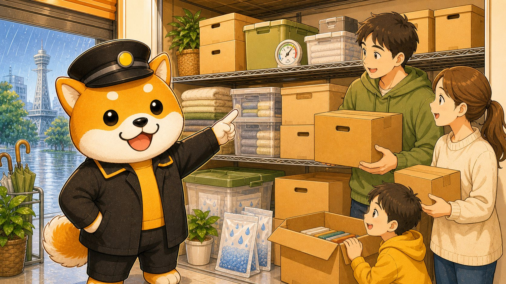
段ボールが湿気を吸いやすい梅雨時期に、荷物を傷めにくくする置き方を紹介。トランクルーム収納番長なら、堺市西区の屋内型で清潔・安心・24時間利用可能な保管先を自然に検討できます。

春の行事が終わったあとに、季節人形を無理なく片付ける考え方を紹介。トランクルーム収納番長なら、堺市西区の屋内型で清潔・安心・24時間利用可能な保管先を自然に検討できます。
育児用品が玄関や押し入れを圧迫しやすい時期に、家族の動線を守る整え方を紹介。トランクルーム収納番長なら、堺市西区の屋内型で清潔・安心・24時間利用可能な保管先を自然に検討できます。
来客用寝具で押し入れが苦しくなりやすい時期に、必要な時だけ気持ちよく出せる整え方を紹介。トランクルーム収納番長なら、堺市西区の屋内型で清潔・安心・24時間利用可能な保管先を自然に検討できます。
部活バッグやボール類が増えやすい時期に、家族の動線を守る整理の考え方を紹介。トランクルーム収納番長なら、堺市西区の屋内型で清潔・安心・24時間利用可能な使い方を自然に検討できます。
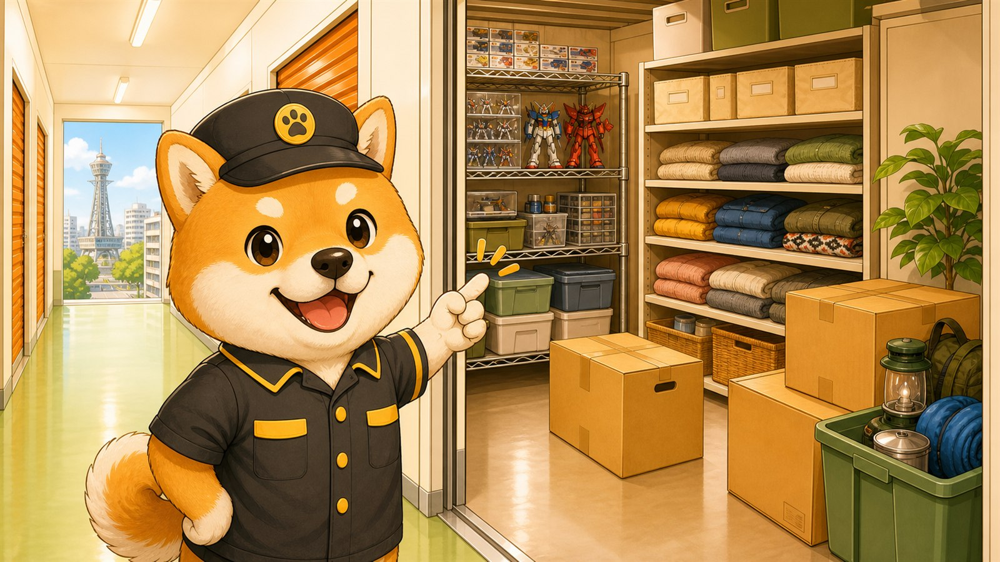
津久野の生活動線に寄り添いながら、外部収納を無理なく始める考え方を紹介。トランクルーム収納番長なら、JR津久野駅から徒歩1分の屋内型で、清潔・安心・24時間利用可能な使いやすさを自然に確かめられます。
扇風機やヒーター、加湿器の置き場に悩みやすい時期に向けて、番長が季節家電の整え方を紹介。堺市西区の屋内型で、清潔・安心・24時間利用可能な保管先を自然に検討できます。
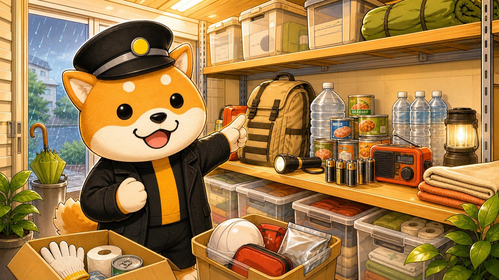
防災リュックや備蓄品をいざという時に取り出しやすく整えるコツを紹介。屋内型で清潔・安心な保管環境と、24時間利用可能な使い方も自然に伝える記事です。

衣替えの荷物置き場に悩む方向けに、トランクルーム収納番長の屋内型を活かした整え方を紹介。清潔・安心・24時間利用可能という使いやすさも自然に伝わる記事です。

トランクルームを検討し始めた方へ、見学時の確認ポイントを整理。堺市西区・JR津久野駅から徒歩1分の屋内型を、安心して選ぶための見方を紹介します。
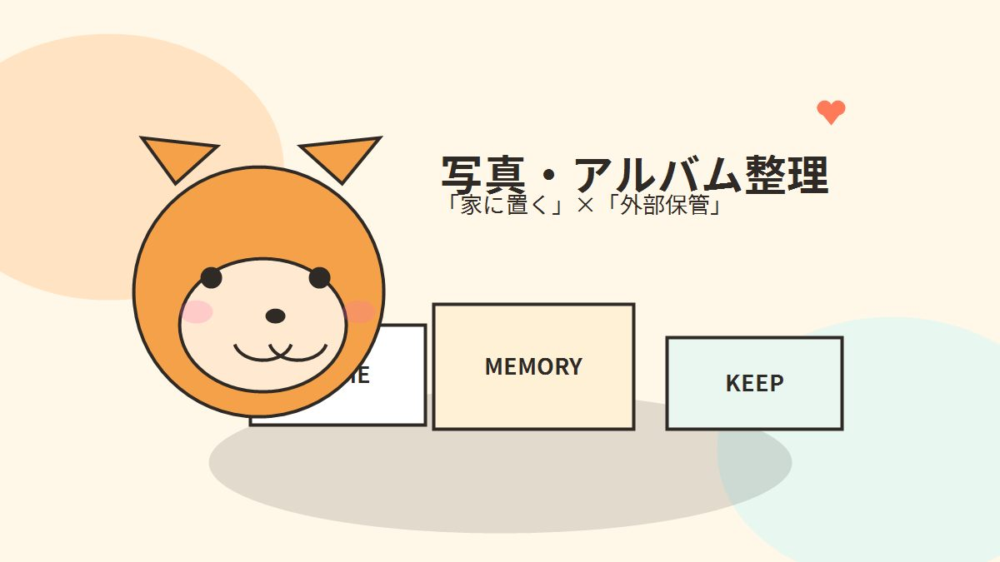
思い出は大切にしながら、暮らしの余白を取り戻すコツ。堺市西区・津久野駅近くの屋内型トランクルーム（清潔・安心／24時間利用可能）を、“思い出の保管庫”として使う発想も紹介します。
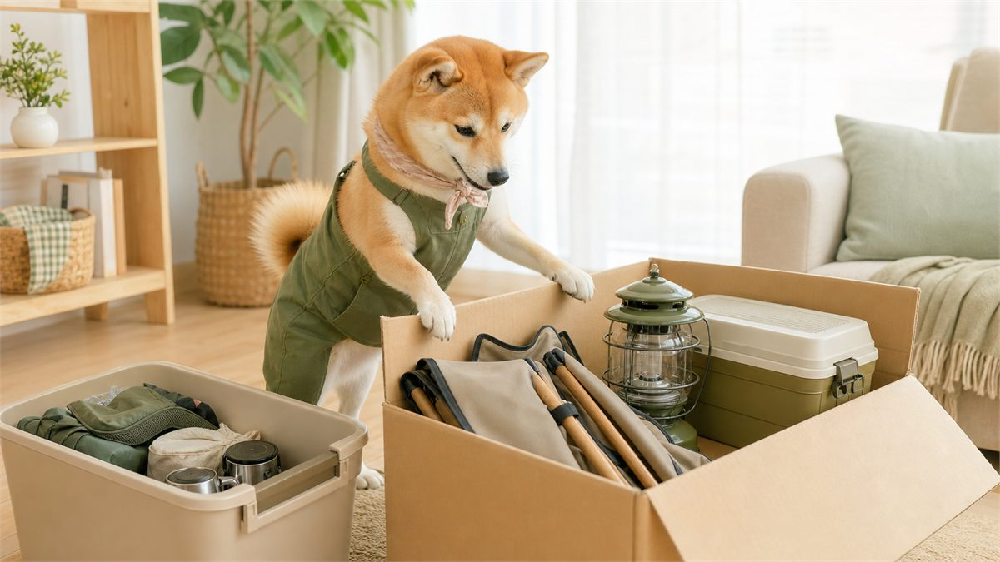
キャンプ・BBQ・プール用品を“使う時だけ”快適に。堺市西区・津久野駅近くの屋内型トランクルーム（清潔・安心／24時間利用可能）を、週末が軽くなる外部収納として回すコツ。
残したい気持ちに寄り添いながら、リビングの余白を取り戻す方法。堺市西区・津久野駅近くの屋内型トランクルームを、清潔・安心で24時間利用可能な外部収納として活かすコツ。
段ボールや梱包材が家の通路を塞ぐ前に、外部収納を“仮置きの基地”に。堺市西区・津久野駅近くで、清潔・安心な屋内型を活用するコツ。
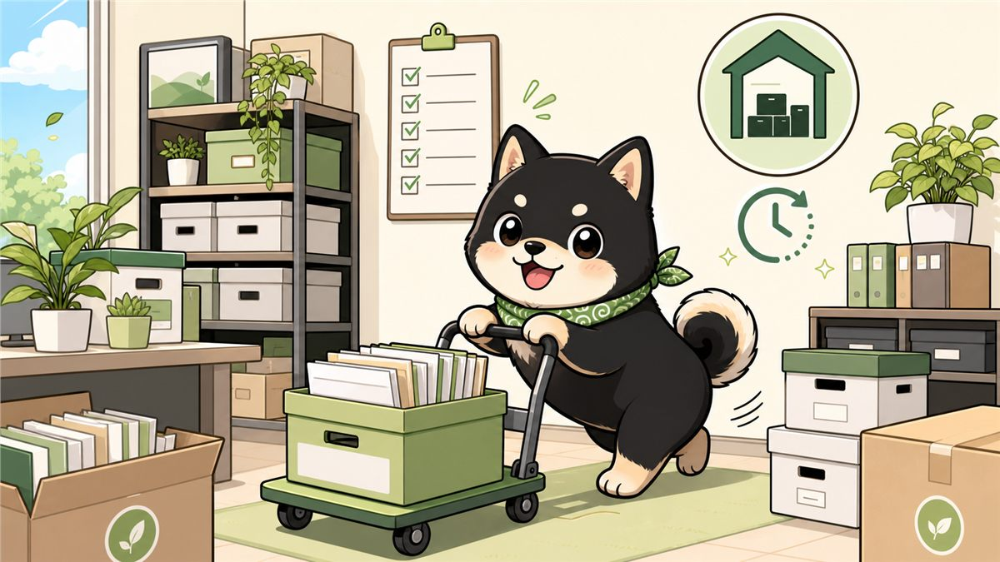
契約書・販促物・備品が増えて仕事場が手狭に。毎日使うものと外部保管を分けて、動線を整える考え方。
空き状況・お見積り・見学予約まで、お問い合わせフォームまたはお電話で承ります。